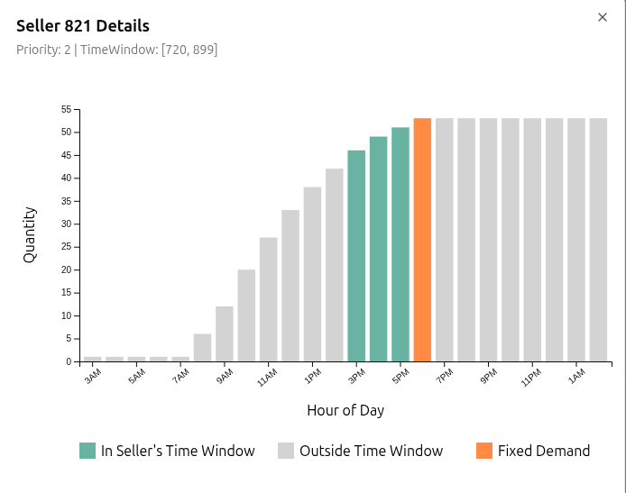
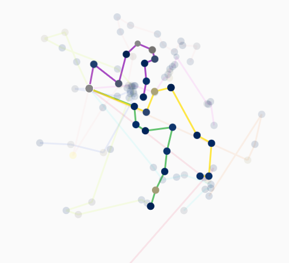
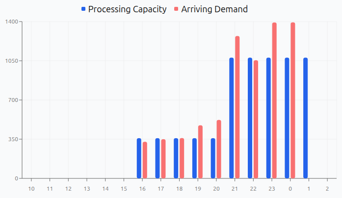

VRPTW with cross-dock sincronization.
The problem
Solution
Key Results
Technologies
1. Demand Curve Estimation

2. Problem Formulation
$$\min \; \alpha \cdot D - \beta \cdot P + \gamma \cdot \sum_{t} \left( A(t) - C(t) \right)^2$$
3. Iterated Local Search (ILS)

4. Kick Adaptivo con Selección de Operadores
5. Variable Neighborhood Descent (VND) with Extended Move Evaluation
